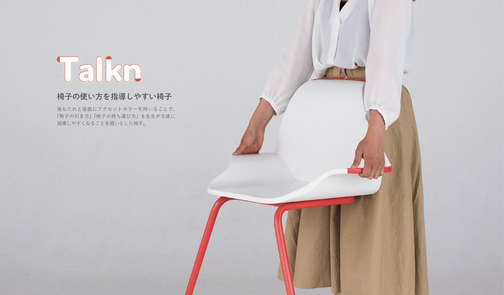
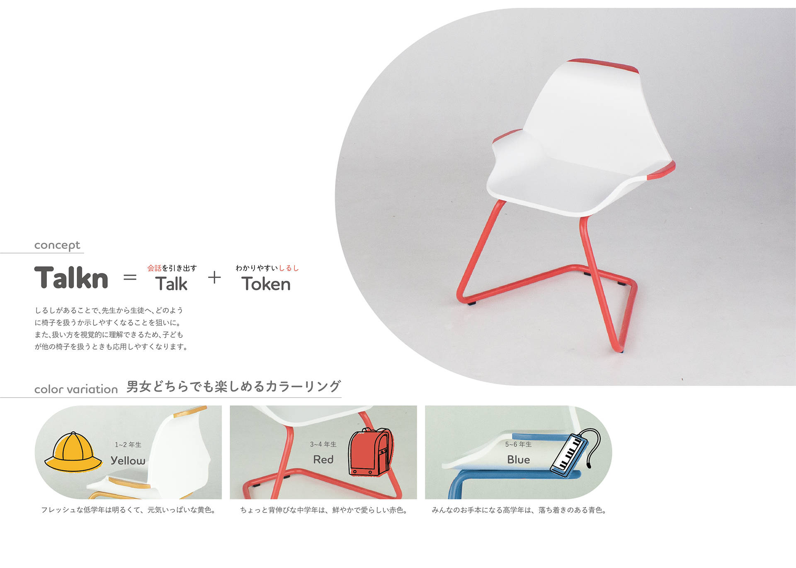
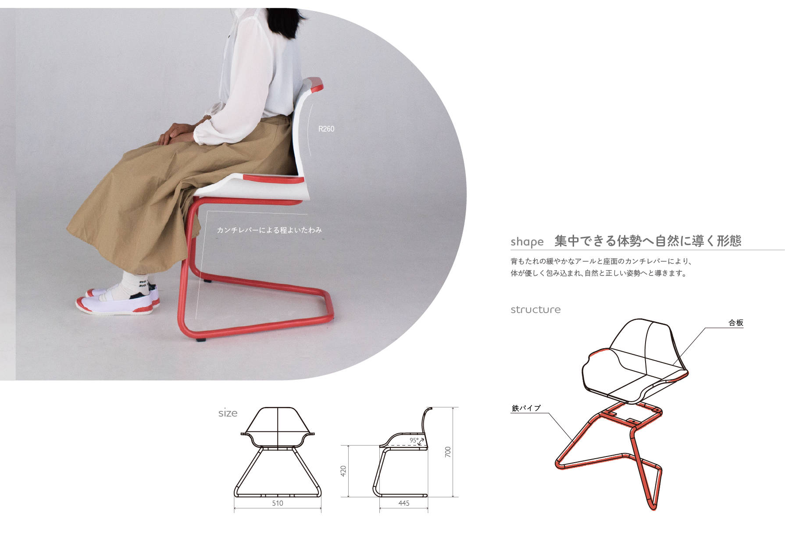
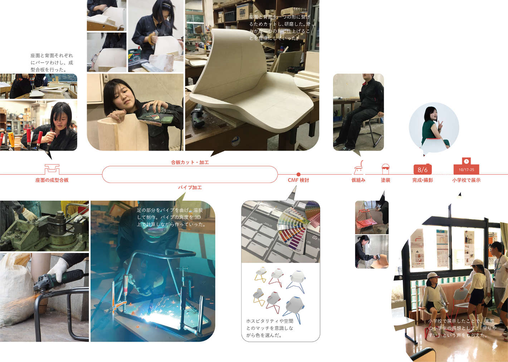
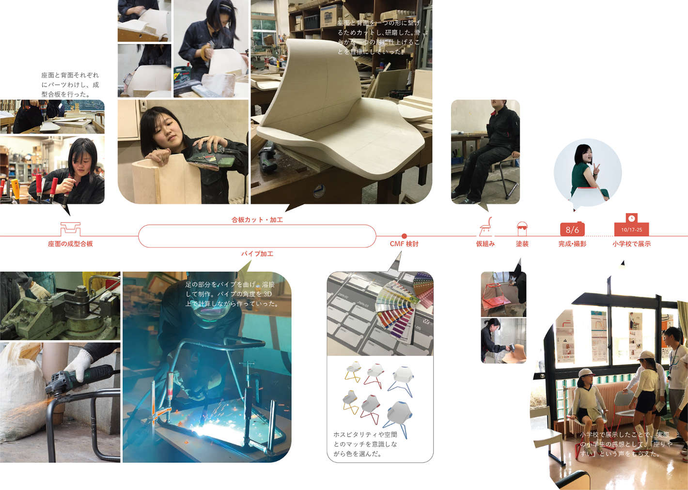
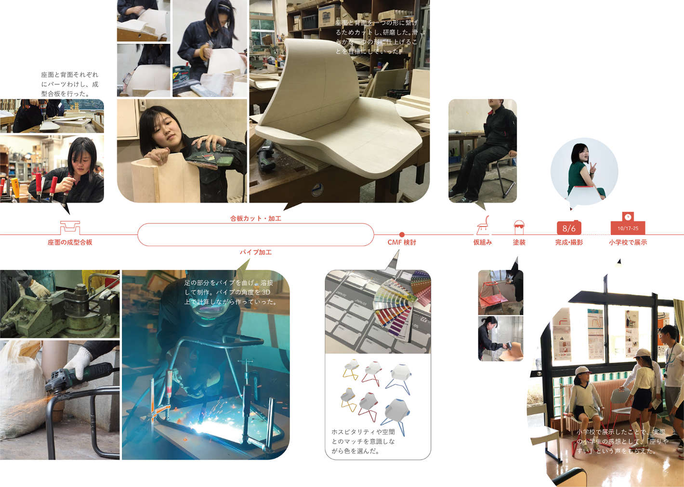
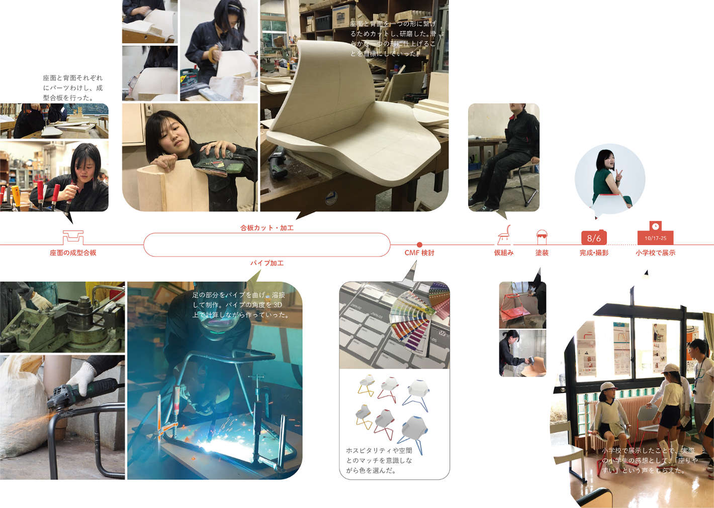

2019.6-8
Talkn トークン
小学校の時間を豊かにする椅子のデザイン
背もたれと座面にアクセントカラーを用いることで、「椅子の引き方」「椅子の持ち運び方」を 教師が生徒に指導しやすく、生徒も理解しやすくなる、コミュニケーションの媒体となる椅子の提案


 


2019.6-8
背もたれと座面にアクセントカラーを用いることで、「椅子の引き方」「椅子の持ち運び方」を 教師が生徒に指導しやすく、生徒も理解しやすくなる、コミュニケーションの媒体となる椅子の提案
